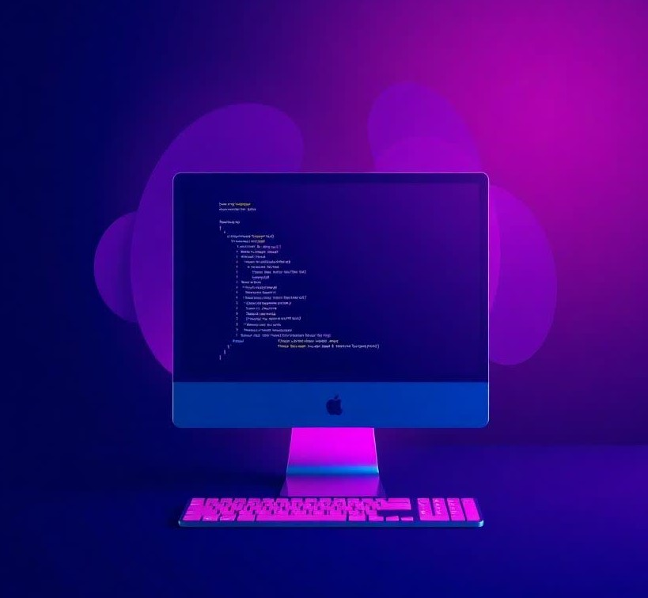

Latest Projects

Web Development
Developed a responsive and informative website for SVN College, showcasing academic programs, faculty, campus facilities, and admission details.
Developed a responsive and informative website for SVN College, showcasing academic programs, faculty, campus facilities, and admission details.